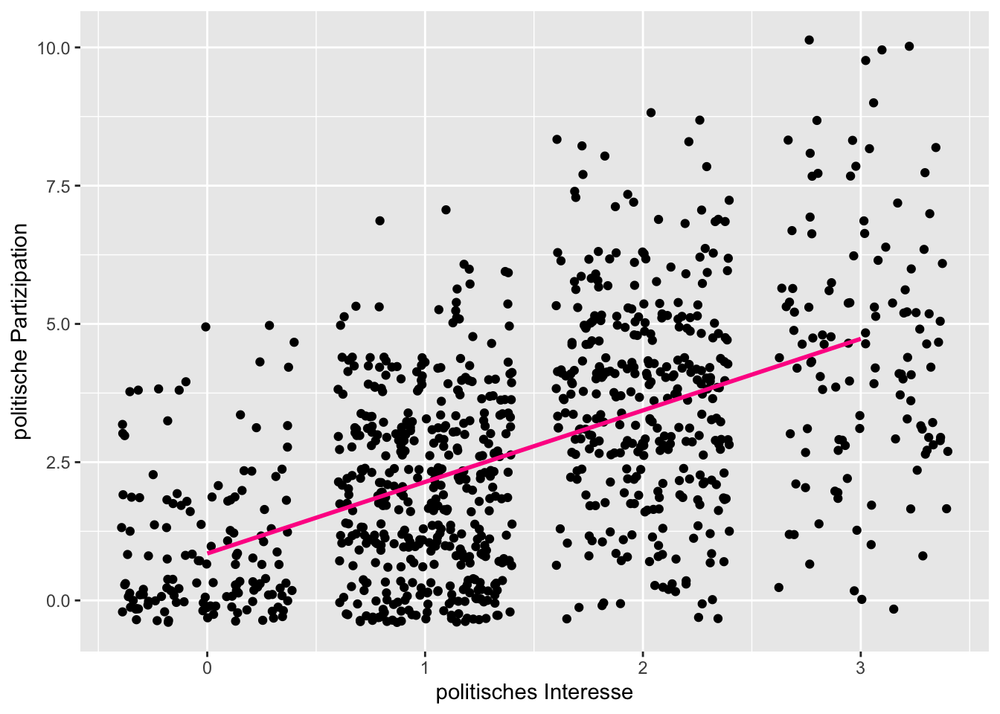
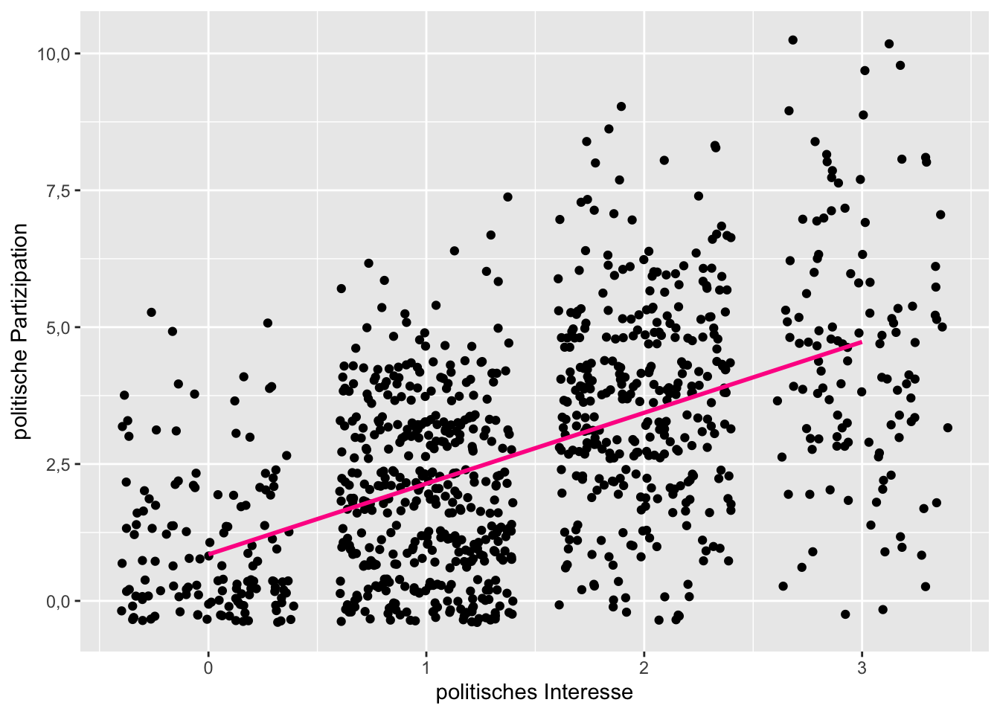

Kapitel 10 Regression
Die Regression ist so etwas wie das “Schweizer Taschenmesser” der empirischen Sozialwissenschaft. Es gibt viele Varianten und Erweiterungen der Regression, der Standardfall ist jedoch die lineare Regression bzw. das lineare Modell, das ich in diesem Kapitel erläutere.
10.1 Das lineare Modell
Das lineare Modell hat die folgende Form, wobei y für die Werte der abhängigen Variable steht (auch Outcome, Kriterium, Regressant oder “zu erklärende” Variable). Die unabhängige(n) Variable(n) heißen x (auch Prädiktoren, Regressoren oder erklärende Variablen) und b ist ein “Gewicht.” e steht für den Fehler, also den Anteil an Varianz, der nicht durch das Modell erklärt werden kann.
\[y = b_{0}+b_{1}x_{1}+b_{2}x_{2}+... b_{n}x_{n}+E\]
Das Modell besagt, dass die Ausprägung der Variable y von den Ausprägungen der x-Variablen abhängt. Diese x-Variablen werden aber mit einem jeweils unterschiedlichen Gewicht b multipliziert. Der “Rest,” also alles, was nicht erklärt werden kann, wird mit E aufgefangen. Das Gewicht b_{0} ist keiner x-Variable zugeordnet. Es ist eine Art grundsätzliches Niveau von y und wird auch als Konstante oder Achsenabschnitt (englisch Intercept) bezeichnet - warum zeige ich später noch.
Das Ziel der linearen Regression ist es, herauszufinden, welche unterschiedlichen Gewichte (also Werte von b) die einzelnen unabhängigen Variablen x jeweils haben. Dadurch kann man eine Aussage treffen, welche Prädiktoren x die Outcome-Variable y in besonderem Maße beeinflussen.
– Moment, stand da gerade beeinflussen? Ja. Tatsächlich ist die theoretische Annahme der Regression, dass es einen Einfluss von der x-Variable auf die y-Variable gibt. Mit der Regression werden also Kausalhypothesen untersucht. Darin unterscheidet sie sich von der [#Korrelation], die lediglich von einem Zusammenhang ausgeht ohne in abhängige und unabhängige Variable zu unterschieden.
An dieser Stelle möchte ich aber ausdrücklich darauf hinweisen, dass weder das lineare Modell, noch R die Annahme der Kausalität überprüfen kann. R kann Ihnen auch nicht sagen, welche Variable in einem Modell die abhängige und welche die unabhängige sein sollte. Es ist Ihre Aufgabe als Forschende:r sachlogische Gründe für die Plausibilität Ihrer Kausalhypothese anzuführen!
10.2 Bivariate lineare Regression
Nach den einführenden Worten ist es jetzt Zeit für ein konkretes Beispiel. Im Folgenden möchte ich mir den einfachsten Fall vornehmen, nämlich eine Regression mit nur einem Prädiktor oder auch eine bivariate Regression. Die Hypothese, die getestet werden soll, lautet:
H1: Die politische Partizipation wird vom generellen politischen Interesse beeinflusst.
Wir nehmen uns also wieder den Gen-Z-Datensatz vor. Die Variablen, um die es hier geht, kennen Sie auch schon aus den vorigen Kapiteln:
Die abhängige Variable politische Partizipation (y) ist ein Summenindex von 10 politischen Handlungen, beispielsweise “Wählen gehen,” “Teilnahme an Produktboykott” usw. Befragte können hier einen Wert zwischen 0 = keine Teilnahme und 10 = Teilnahme an allen zehn Handlungen erreichen.
Die Prädiktorvariable politisches Interesse (x) wurde auf einer Skala von 0 = überhaupt nicht bis 3 = sehr stark gemessen.
Die Formel für eine bivariate Regression lautet so:
\[y = b_{0}+b_{1}x_{1}+E\]
Für unsere konkrete Hypothese bedeutet das:
\[politische Partizipation = b_{0}+b_{politisches Interesse} × politisches Interesse+Fehler\]
Sie kennen wahrscheinlich auch schon die grafische Darstellung aus den Sitzungsfolien oder aus Lehrbüchern:

b1 ist die Steigung der Regressionsgeraden (englisch slope). Wenn wir eine Einheit auf der x-Achse weitergehen, um wie viele Einheiten steigt die Regressionsgerade dann auf der y-Achse an? Im dargestellten Beispiel sind das bei der pinken Linie zwei y-Einheiten. Bei den zur Veranschaulichung dargestellten alternativen Slopes ist die Steigung eine andere: Bei hellgrün sind es 4 (sehr steile Linie), bei hellblau nur 0,25 (sehr flach).
b0 ist der Achsenabschnitt, also der Punkt, an dem die Gerade die y-Achse schneidet. Anders ausgedrückt: Wenn die unabhängige Variable den Wert x = 0 hat, welchen Wert hat dann y?
Das Residuum ist die Abweichung der Messpunkte von der Regressionsgeraden. Hier dargestellt durch einen einzelnen blauen Punkt (die Messung), der eben nicht genau auf der pinken Linie liegt. Der Fehler E in der Regressionsgleichung wird in der Regel gebildet durch die Summe der quadrierten Residuen. Das hat dann den Vorteil, dass positive und negative Residuen sich nicht gegenseitig aufheben können und dass größere Abweichungen proportional stärker ins Gewicht fallen als kleinere. Es ist aber vor allem eine Konvention. Denkbar wäre es auch, den Fehler durch die Summe der Beträge der Residuen zu bilden. Macht aber keiner.
Warum gibt es überhaupt Residuen und den Fehler?
Der Fehler basiert auf allen Abweichungen der gemessenen Werte vom Modell der Regressionsgeraden (Residuen). Empirisch wird sich nämlich kaum eine perfekte Anordnung zeigen, bei der alle Messpunkte genau auf der Geraden leigen. In einer Messung wird es immer Punkte geben, die mehr oder weniger stark von der Regressionsgerade abweichen. In unserem Beispiel könnte es eine Person geben, die sich erst an 4 politischen Handlungsmöglichkeiten beteiligt hat, die aber dennoch angibt, ihr politisches Interesse sei extrem hoch. Für diese Abweichung kann es natürlich ganz unterschiedliche Gründe geben. Die empirische Wirklichkeit ist eben kein Modell! Hier ein paar unterschiedliche Beispiele, wie die Abweichung zustande kommen kann:
Die Person hat die Skala für politisches Interesse falsch herum gedeutet, sie wollte eigentlich ein niedriges politisches Interesse angeben - also ein “Fehler” beim Ausfüllen des Fragebogens.
Die Person hatte einfach noch nicht genügend Gelegenheit, sich an politischen Aktionen zu beteiligen. Vielleicht ist sie sehr jung und hat deshalb nicht die Möglichkeit, zu Demonstrationen in die nächste Stadt zu fahren oder zu wählen. Es könnte also sein, dass unser Modell unvollständig ist und noch nicht alle relevanten Einflussfaktoren berücksichtigt sind.
Der Wert, den unsere Regressionsgerade vorhersagt, ist empirisch gar nicht erreichbar. Es könnte zum Beispiel sein, dass die modellhafte Gerade vorhersagt, dass eine Person, deren politisches Interesse bei “3” liegt, “5,2” politische Handlungen ausgeführt haben müsste. Das geht ja kaum. Der Wert, den die Gerade schätzt, ist eben nur hypothetisch.
Der Zusammenhang ist gar nicht linear (also keine gerade Linie). Vielleicht wäre eine “andere Form” der Line viel angemessener. Vielleicht eine Kurve die erst steil ansteigt und dann abflacht.
In jeder tatsächlich durchgeführten Berechnung einer Regression liegt wahrscheinlich eine Mischung aus verschiedenen Gründen vor. Was genau sich hinter dem Residuum genau verbirgt, werden wir nie wirklich wissen. Es ist jedoch natürlich unsere Aufgabe, den Wert mit einem gut durchdachten Forschungsdesign möglichst klein zu halten.
Bevor es jetzt losgeht noch eine kleine Anmerkung zu der Kausalannahme der Hypothese: Allgemein wird häufig davon ausgegangen, dass das Denken das Handeln prägt. Deshalb ist die Hypothese grundsätzlich plausibel. Häufig ist jedoch durchaus auch eine umgekehrte Richtung plausibel. Auch in diesem Fall könnte es durchaus sein, dass die Teilnahme an politischen Aktionen wie Demonstrationen oder Wahlen Einfluss auf das politische Interesse ausübt. Nehmen wir mal an, wir haben einen langen Theorieteil geschrieben und die Unterteilung in unabhängige und abhängige Variable hinreichend begründet.
10.2.1 Grafische Darstellung
Die erste Annäherung an die Regression ist grafisch. Mit einem Scatterplot oder Jitterplot kann der Zusammenhang zwischen zwei Variablen visualisiert werden (vgl. Abschnitt [### Streudiagramm]). Das Paket ggplot2 kann aber noch mehr. Mit dem Geom geom_smooth kann man über method = "lm" (für “linear model”) eine Regressionsgerade zur Punktewolke hinzufügen.
data %>%
ggplot(aes(x = politisches_interesse, y = pol_part_sx)) +
geom_jitter() +
geom_smooth(method = "lm", se = FALSE, color = "deeppink") +
xlab("politisches Interesse") +
ylab("politische Partizipation")
Prima, das sieht ja schon super aus! Und definitiv nach einem positiven Zusammenhang. Aber welche Werte haben jetzt b0 und vor allem b1? Dazu mehr im nächsten Abschnitt.
Zunächst möchte ich noch kurz auf das geom_smooth() eingehen. Oben habe ich der Funktion drei Argumente mitgegeben. Das erste Argument, method, hatte ich auf lm gesetzt, weil wir ja hier genau das machen wollen, nämlich eine Regressionsgerade nach dem “linearen Modell” berechnen. Denkbar wären natürlich auch andere Modelle (z.B. Kurven). Beim letzten Argument color = "deeppink" können Sie sich wahrscheinlich schon denken was es macht: Es färbt die Gerade in CI-konformem HMTMH-Magenta ein. Aber was macht das mittlere Argument se = FALSE? Das finden wir ganz einfach heraus, indem wir es einmal auf TRUE setzen:
data %>%
ggplot(aes(x = politisches_interesse, y = pol_part_sx)) +
geom_jitter() +
geom_smooth(method = "lm", se = TRUE, color = "deeppink") +
xlab("politisches Interesse") +
ylab("politische Partizipation")
Hmm. Viel hat sich nicht verändert. Aber jetzt ist da so ein “Schatten” hinter der Geraden. Dieser Schatten zeigt das Konfidenzintervall der Regressionsgeraden an. Praktisch!
10.2.2 Die Funktion lm()
Die grafische Darstellung ist sehr nützlich, aber natürlich wüssten wir auch gerne die genauen Werte für unsere Regressionsgerade. Um die herauszufinden, bietet das stats-Paket die Funktion lm() (linear model). Zur Erinnerung: Genau wie base-R muss man das stats-Paket nicht gesondert laden, es ist standardmäßig verfügbar, sobald man RStudio öffnet.
Die Funktion lm() erwartet zwei Argumente: 1. ein Objekt der R-Klasse “formula.” Das ist eine neue Art von Objekt, die bisher noch nicht vorkam. Mit so einer “Formel” teilt man R mit, mit welchen Variablen ein Modell gerechnet werden soll und wie die Variablen miteinander zusammenhängen. Für letzteres gibt es verschiedene Operatoren. 2. Als zweites Argument benötigt die Funktion natürlich noch den Datensatz auf den die Formel angewendet werden soll.
Für die bivariate Regression müssen wir nun zuerst eine Formel formulieren, also unsere Hypothese für R so übersetzen, dass es sie versteht und die Regression berechnen kann. Dazu benötigen wir den Operator ~ (Tilde). Die Tilde ~ bedeutet: “wird vorhergesagt durch”. Für die lineare Regression muss die Formel also abhängige_Variable ~ unabhängige_Variable lauten.
Nachdem man die lm()-Funktion ausgeführt und das Ergebnis einem selbst benannten Objekt (z.B. my_model) zugeordnet hat, kann man sich mit der summary()-Funktion die Ergebnisse der Regression anzeigen lassen. In unserem Beispiel sieht das Ganze so aus:
# Model formulieren
my_model <- lm(pol_part_sx ~ politisches_interesse, data = data)
# Zusammenfassung ausgeben
summary(my_model)##
## Call:
## lm(formula = pol_part_sx ~ politisches_interesse, data = data)
##
## Residuals:
## Min 1Q Median 3Q Max
## -4.7303 -1.1427 -0.1427 1.0042 5.5635
##
## Coefficients:
## Estimate Std. Error t value Pr(>|t|)
## (Intercept) 0.84886 0.10594 8.013 3.12e-15 ***
## politisches_interesse 1.29382 0.06332 20.431 < 2e-16 ***
## ---
## Signif. codes: 0 '***' 0.001 '**' 0.01 '*' 0.05 '.' 0.1 ' ' 1
##
## Residual standard error: 1.746 on 997 degrees of freedom
## (7 observations deleted due to missingness)
## Multiple R-squared: 0.2951, Adjusted R-squared: 0.2944
## F-statistic: 417.4 on 1 and 997 DF, p-value: < 2.2e-16Puh, da steht eine Menge Zeug. Vieles davon habe ich noch gar nicht erklärt. Gehen wir den Output der Reihe nach durch.
Der Output beginnt mit dem Call. Das ist ganz nett, hier wird unser Funktionsaufruf wiederholt. Er ist also im Model mit abgespeichert: Ein kleiner Reminder, falls man viele Modelle gerechnet und vergessen hat, welche Formel und Daten man jeweils benutzt hat.
Dann folgen die Residuals. Die Residuen sind die Abweichungen der Messwerte von den Werten, die die Regressionsgerade für jeden Fall im Datensatz vorhersagen würde. Also der Fehler oder das, was oben in der einleitenden Grafik mit e gekennzeichnet war. Wenn man sich den Scatterplot von oben anschaut, dann ist das Residuum die Distanz von jedem einzelnen Punkt zur Regressionsgeraden. Liegt der Punkt über der Regressionsgeraden hat das Residuum ein positives Vorzeichen. Liegt ein Punkt darunter, ist das Vorzeichen negativ.
Im Output der lm()-Funktion werden hier einfach ein paar zentrale Kennzahlen über die Verteilung der Residuen angegeben, nämlich die Quartilgrenzen. Wir könnten uns aber auch für jeden Fall im Datensatz das jeweilige Residuum ausgeben lassen. Schön wäre natürlich, wenn die Residuen möglichst klein wären. Das ist hier aber leider nicht der Fall. Die Werte weichen bis zu -4.73 nach unten und sogar bis zu 5.56 nach oben ab.
Die Werte für b0 und b1 finden sich im dritten Bereich der Ausgabe unter Coefficients in der Spalte “Estimate”:
- In der Zeile “(Intercept)” ist der Wert für b0 (hier 0.85)
- In der Zeile “politisches_interesse” ist der Wert für b1 (hier 1.29)
Die weiteren Spalten in der Coefficients-Tabelle enthalten den Standardfehler (“Std. Error”) für die b-Werte und jeweils noch einen T-Test (vgl. zukünftiges Kapitel “T-Test”). Der T-Test prüft, ob die b-Werte überzufällig von Null abweichen. Seine Test-Statistik ist der T-Wert (“t value”) und zu diesem T-Wert gibt es noch ein Signifikanzniveau (“Pr(>|t|)”). Wie immer gilt hier, dass ein Wert von p < .05 als signifikant gewertet wird. Praktischerweise sind signifikante Werte in der Tabelle mit Sternchen * gekennzeichnet. Was die Sternchen und die anderen Codes genau bedeuten, ist praktischerweise unter der Tabelle nochmal aufgeführt.
Was sagen die Regressionskoeffizienten (b-Werte) aus?
Der Wert b1 = 1.29 gibt an, um wie viele Einheiten die abhängige Variable ansteigt oder abfällt, wenn der Prädiktor um eine Einheit größer wird. Hier also: Nimmt das politische Interesse um 1 zu (also z.B. von 2 = Weniger stark auf 3 = Eher stark) dann kommen 1.29 politische Handlungen dazu.
Der Wert b0 = 1.3 bedeutet, dass die abhängige Variable “politische Partizipation” den Wert 1.3 annimmt, wenn die unabhängige Variable = 0 ist. Tatsächlich, in unserer Grafik oben schneidet die Regressionsgerade die Y-Achse genau bei diesem Wert. Aus dem positiven Intercept kann man schließen, dass es offenbar ein gewisses Grundniveau von politischer Partizipation gibt. – Selbst wenn kein politisches Interesse vorliegt (0 = Überhaupt nicht), gibt es laut der Regressionsgeraden eine gewisse politische Partizipation.
Im vierten und letzten Abschnitt des Outputs wird der Standardfehler der Residuen inklusive Freiheitsgerade (degrees of freedom) angegeben (Erläuterung folgt später). An dieser Stelle erfährt man auch, dass einige Fälle aus der Berechnung entfernt wurden, da sie fehlende Werte in der einen oder anderen Variable aufweisen.
Zu guter Letzt gibt es noch einen R2-Wert (r-squared), ein korrigiertes R2 (adjustet R-squared) und eine F-Statistik für eben dieses R2. R2 ist der Anteil der durch den Prädiktor erklärten Varianz an der Gesamtvarianz der abhängigen Variable. Mit dem F-Test im Output wird hier wiederum geschaut, ob R2 sich signifikant von Null unterscheidet. – So ähnlich wie oben mit dem T-Test bei den b-Werten.
Wenn man eine Regression berechnet, gibt man diese in der Regel in Form einer Tabelle an. Eine einzelne Regression kann aber auch textlich berichtet werden. Neben b1 (inkl. Signifikanzniveau) sollte außerdem unbedingt mindestens R2 inklusive der Freiheitsgrade und dem Signifikanzniveau angegeben werden. Der Intercept wird in Tabellen mit berichtet, auch wenn er kaum interpretiert wird.
sign <- case_when(
glance(my_model)$p.value[[1]]<0.001 ~ "Das Modell ist auf dem Niveau p < .001 signifikant.",
glance(my_model)$p.value[[1]]<0.01 ~ "Das Modell ist auf dem Niveau p < .01 signifikant.",
glance(my_model)$p.value[[1]]<0.05 ~ "Das Modell ist auf dem Niveau p < .05 signifikant.",
TRUE ~ "Das Modell ist nicht signifikant."
)Das Ergebnis für unsere Hypothese von oben lautet wie folgt: Die Daten bestätigen die Hypothese. Die politische Partizipation wird vom generellen politischen Interesse beeinflusst. Steigt das politische Interesse um einen Skalenpunkt, so geht dies mit einer Zunahme von b = 1.29 politischen Handlungen einher. Die erklärte Varianz beträgt R2 = 0.3, bei df = 997 Freiheitsgraden (korrigiertes R2 = 0.29). Das Modell ist auf dem Niveau p < .001 signifikant.
10.2.3 Standardisierte Regressionskoeffizienten (β)
Neben den normalen Regressionskoeffizienten b kann man auch standardisierten Koeffizienten β (beta) berechnen. Dazu z-standardisiert man die Messwerte zuerst oder formt die Regressionsgleichung entsprechend um. Durch die Standardisierung wird die Skalierung der einzelnen Messwerte herausgerechnet, Z-Standardisierung bedeutet ja “auf den Mittelwert zentrieren und Standardabweichung = 1 setzen.” Eine standardisierte Prädiktorvariable ist nicht mehr im oben genannten Sinn interpretierbar, denn wenn der Wert der standardisierten Variable sich um 1 erhöht, dann ist das eben keine Einheit mehr (also nicht der Sprung von 2 = Weniger stark auf 3 = Eher stark) sondern eine Erhöhung um eine Standardabweichung (was immer das heißt). Die standardisierten β-Werte haben aber einen anderen Vorteil: Sollte man mehrere Prädiktoren in einem Modell haben, die aber auf unterschiedlichen Skalen gemessen wurden (z.B. 1x 5er und 1x 7er Skala), kann man ihren relativen Erklärungsbeitrag besser untereinander vergleichen.
Das stats-Paket kann die β-Koeffizienten nicht direkt berechnen. Dazu gibt es aber das Paket lm.beta mit der gleichnamigen Funktion, welche auf ein mit lm() erzeugtes Modell angewendet werden kann.
# Paket laden
library(lm.beta)
# beat-Koeffizienten ausgeben
lm.beta(my_model) ##
## Call:
## lm(formula = pol_part_sx ~ politisches_interesse, data = data)
##
## Standardized Coefficients::
## (Intercept) politisches_interesse
## 0.000000 0.543259Achtung b oder β?
Leider gibt es bezüglich b und β – wie so oft – ein wenig Begriffs-Chaos in unterschiedlichen Lehrbüchern. Manchmal wird nämlich für die hier mit b betitelten nicht-standardisierten Regressionskoeffizienten β genutzt.